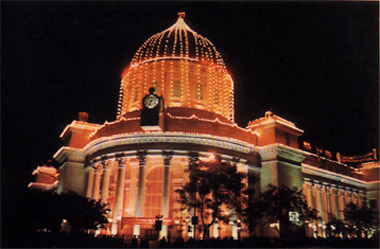
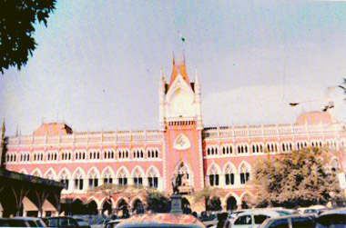
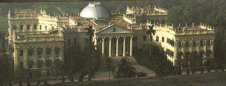
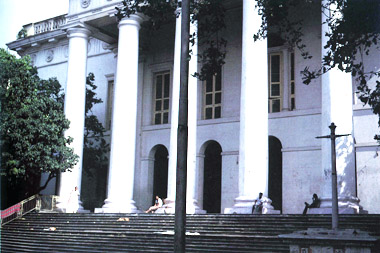
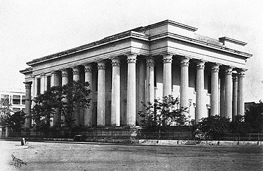

Administrative and Judicial Buildings
As former capital of the British India, the city of Kolkata, was one of most important centres of trade and commerce in the Eastern Hemisphere as well as the main outpost of British Empire in the east. A number of administrative and judicial buildings were built over a period of about two centuries to accommodate the colonial corps. Today most of these have turned into the administrative and judicial headquarters of the state of West Bengal. However many buildings are shabbily maintained, reconstructed beyond recognition or even completely demolished apart from a few well maintained ones.
GENERAL POST OFFICE

HIGH COURT

WRITERS BUILDING
RAJ BHAVAN

TOWNS HALL

METCALFE HALL
